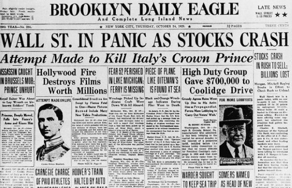
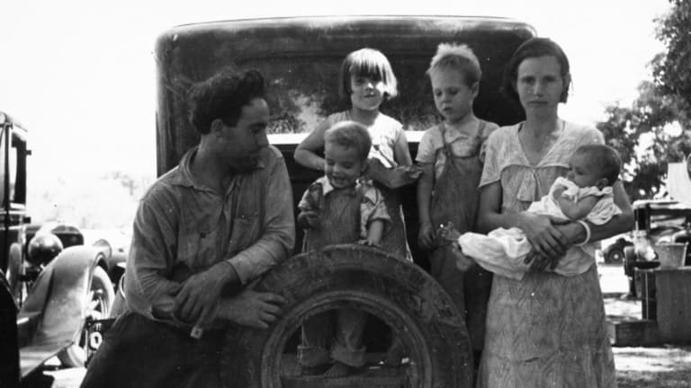

The Great Depression
Carlos Aguero McCorkle

Cause of the Great Depression
In 1929 the stock market reached its peak after the decade of rapid growth and prosparity in the U.S called The Roaring Twenties. In this decade the total wealth of the U.S. more than doubled. Anyone could, and often would, pour their savings into stocks at this time. By 1929 unemployment had already increased and production had declined. This made stock prices higher than their actual value. The economy was falling apart, drouts and falling food prices caused the agricultural sector to struggle. This, coupled with banks overborrowing, low wages, and consumer debt ever increasing casued a mild recession in the summer of 1929.
Finally, on October 24, 1929, the stock market began to crash. A record 12.9 million shares were sold, then five days later, 16 million were traded. Millions of shares end up worthless, everything was spiraling out of contol, all consumer confidence was gone, employers were firing workers, slowing production, and lowering wages for the "lucky" remaining workers. This affected the rest of the world because many countries adhered to the gold standard. The gold standard brought countries together in a fixed currency exchange and when the U.S.A fell the gold standard hurt other countries, causing Europe especially to pay a heavy toll.

Life During the Depression
The Great Depression impacted everyone from low wage janitors to even upper class professionals such as lawyers and doctors. Even these professionals saw income drops of up to 40 percent. People that used to not have to worry about money and had the "American Dream" faced finacial instability or even ruin. A widely used motto during the toughest times was, "Use it up, wear it out, make do or do without." In these times people also had to learn to make food last with little cost. Common foods were ones that were simple and served a lot such as chilli, macaroni and cheese, and soup. Many vacant lots were also converted into thrift gardens. In Detroit, these thrift gardens provided 20,000 people with food from 1931 to 1932.
In the 1930's Monopoly and Scrabble was introduced and became very popular. Most people played board games or cards with neighbors and friends because they no longer had money to spend on lesuire activities such as going to the movies. Mini golf took off as well with 30,000 courses popping up around the country. this was another cheap way to spend time with family and friends with rounds only costing 25 to 50 cents each. Potlucks were held often to share food and have a low cost source of social entertainment also.
Women in this time began trying to find work to keep their family afloat or to maintain their middle-class status. They often took jobs that were not seen as socially acceptable for men at the time. This included teachers, nurses, secretaries, and telephone operators. Unfortunately they were often paid less that their male counterparts at the time.
The depression had many other phychological affects on the nation as well. In 1933 the national suicide rate hit an all time high. A trend of men abandoning their family, often out of embarrassment, rose and was sometimes called a "poor man's divorce". Many teens left families in search of work because they felt like a burden to their parents. There was an estimated 2 million travelling hobos during the depression. These people commonly hopped on freight trains illigally to travel and camped in hoovervilles. Contrary to popular belief crime only spiked during the first few years of the depression, after which it turned into a downfall and was merely hyped up by news of things like Bonnie and Clyde as well as other big events of the same kind.

Executive order 9066
After the attack on Pearl harbor, U.S. citizens thought we needed to "do something" about the japanese in the U.S. On February 13, 1942 President Franklin Roosevelt signed executive order 9066. This meant any person that was even just 1/8 Japanese on the West Coast were taken to assembly centers to be transfered to evactuation camps. That means 90% of all 126,000 mainland Japanese were moved to internment camps, 2/3 were citizens, 3/4 were under 25. Evacuees agreed to turn over all property and assumed risks of it, the internment destoryed them financially
Sources
|
{kind=link}